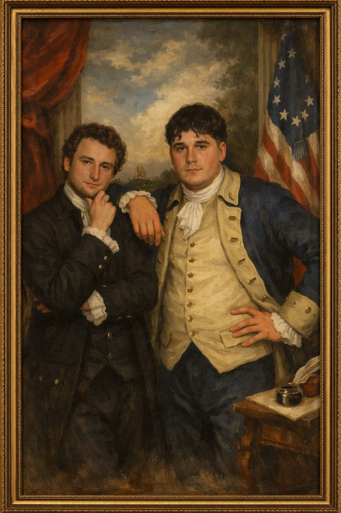

Mi Curriculum |
Nombre: Alejo Abrate
Edad: 23
Correo electrónico: abratealejo@gmail.com
Teléfono: (3564) 379656
Domicilio: Rosario de Santa Fe 3339, San Francisco, Córdoba.
Terciario:
Carrera: Tecnicatura en Programación, UTN. Período: 2025-
Secundario:
Técnico en Automotores, IPET N°50 Emilio F. Olmos. Período: 2015-2021
Cursos Realizados:
Manejo Básico de Impresoras 3D, Universidad Tecnológica Nacional (UTN), San Francisco (Córdoba). Período: 2021
Encargado de Empaquetamiento de Productos y Mantenimiento del Depósito
Empresa: Línea de Compras
Período: 2021-2022
Referencia: Roberto Arriola – (3564) 415964
Reparto y entrega de productos alimenticios
Período: 2023-2024
Referencia: Rubén Banno - (3564) 412702
Iluminación
Período: 2023-2026
Referencia: Matias Banno - (3564) 500297
Cocina
Empresa: La Árabe
Período: 2024-2024
Referencia: Walter Sarmiento - (3564) 613719
Atención al público
Empresa: Peperoni's
Período: 2024-2025
Referencia: Valentina Pussetto - (3654) 615400
Fabricación y venta de muebles artesanales
Empresa: Don Antonio Workshop
Período: 2020-2025
Referencia: Paulo Abrate - (3654) 385677
María de los Angeles Ghisolfi (Tata) - (3564) 660838
Escudero María Julia - (3654) 625606
Joaquín Angiolini - (0358) 155045978
Deportes
Rugby, Institución: Los Charabones
Taekwondo - ITF, Institución: Academia Lobo Blanco
Idiomas
Inglés: Nivel Intermedio